Take-home Exercise 1
Introduction
This take-home exercise uses data sourced from Department of Statistics, Singapore which contains data on Singapore Residents by Planning Area / Subzone, Age Group, Sex and Type of Dwelling in June 2022. Through the use of the age-sex pyramid method, this visualisation seeks to reveal insights on the demographic structure of Singapore at the planning area level.
The final analytical visualisation output has been published on Tableau Public.

Findings from Analytical Visualisation
Populous Estates
The age-sex pyramid is able to visually depict which planning areas are the most populous estates at the total population level. Organising this into a Trellis plot enables further contrasting between the selected planning areas, with the length of the bars depicting Bedok (279k), Sengkang (253k) and Hougang (228k) as estates with the highest population, while Bukit Timah (79k) and Queenstown (97k) are less densely populated.
Ageing Population vs Younger Population
The age-sex pyramid is also able to derive insights on the age composition within a given planning area. For instance, comparing the range where the bar chart peaks between Punggol and Queenstown, it is evident that residents in Punggol mostly belong to the younger age group, while residents in Queenstown are generally older in age.
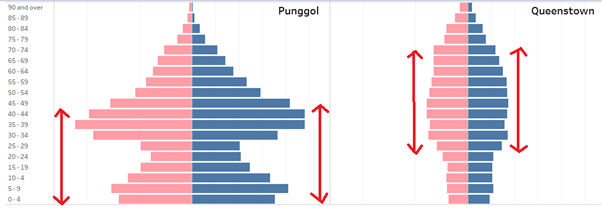
Family with kids vs Families with no kids
The distribution of the bar chart allows us to infer the age range of family nucleuses within the planning areas. For example, the charts displayed below exhibits a bimodal distribution.
The first peak is symmetrical between both genders and can be indicative of the age range of parents. The age range of parents that resides in Punggol and Sengkang are broadly similar (i.e., 30 to 45 years old), while parents in Pasir Ris are older (i.e., 50+ years old).
The sequence of the next peak in the chart is broadly consistent across all 3 charts, wherein the age difference between the 2 peaks is around +/- 30 years - suggestive that the second peak is the children of parents (i.e., less than 10 years old). This pattern allows us to differentiate the mature estates like Pasir Ris, where the age range of parents and their children are older, against the newer estates like Sengkang and Punggol, where parents and their children are younger in age.
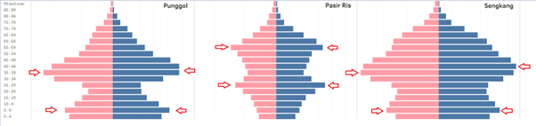
In contrast, the distribution of residents in Queenstown does not exhibit an obvious peak, with a somewhat moderate bell-shaped distribution. This implies that in comparison to other estates, residents residing in Queenstown are more likely to have no kids.
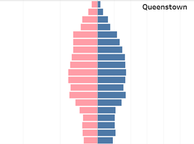
Gender imbalances
The age-sex pyramid allows us to visually contrast and pick out non-symmetrical patterns relating to gender imbalances. This is particularly noticeable in the older age groups. For instance, in the older estates such as Ang Mo Kio, Bedok and Queenstown, there is a greater contrasting effect between females and males. This is consistent with the general understanding that females have a longer lifespan than males.
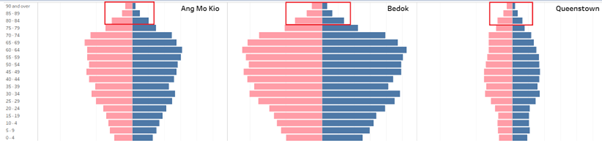
Reproducible Procedures - Step-by-Step Description
This section details the steps required to produce the dashboard visualisation.
Loading of Data
Load the data based on dataset respopagesextod2022.csv downloaded from SingStat in Tableau and rename the dataset to “SG Residents Data (June 2022)” for clarity.
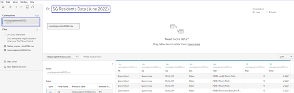
Setting Up the Bar Chart
- Click on the new worksheet tab. From Dimensions, drag AG to the Rows shelf. This will define the Y-axis of the bar chart.
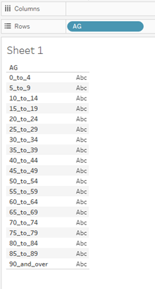
- Right click on the AG field under the Rows shelf, click on Edit Aliases and update the Alias values to a more readable format.
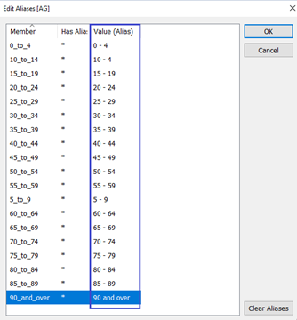
- Right click on the AG field under the Rows shelf and select Sort descending.
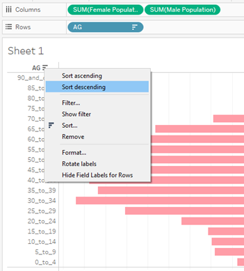
- Create a calculated field labelled ‘Female Population’ that returns the Population value if the gender is female.
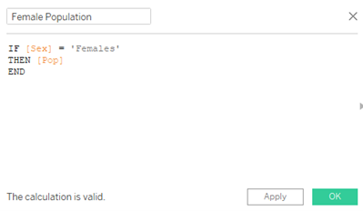
- From Measures, drag the newly created Female Population calculated field to the Columns shelf to create a bar chart that represents the female population. From the Marks card for Female Population, click on Colour and change the color of the bars to pink.
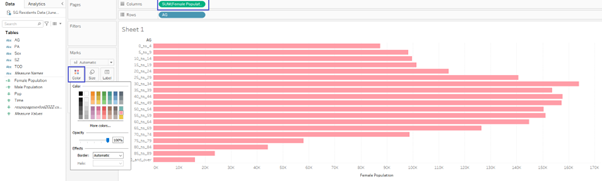
- Create a calculated field labelled ‘Male Population’ that returns the Population value if the gender is male.
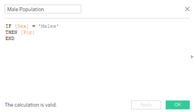
- From Measures, drag the newly created Male Population calculated field to the Columns shelf to create a bar chart that represents the male population. From the Marks card for Male Population, click on Colour and change the color of the bars to blue.
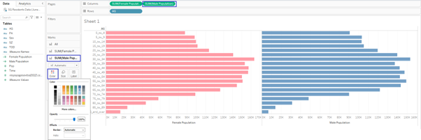
- Right-click on the X-axis for the Female Population, and select Edit Axis. Under Scale, select Reversed.
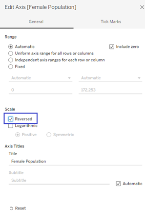
Creating the Trellis Chart Display
- 9 Planning Areas have been selected for the purpose of this exercise. Create 2 new calculated fields to index the Planning Area by columns and rows. The expected output should be reflected in this order:
| Row / Col # | 1 | 2 | 3 |
|---|---|---|---|
| 1 | Ang Mo Kio | Bedok | Bukit Timah |
| 2 | Choa Chu Kang | Hougang | Pasir Ris |
| 3 | Punggol | Queenstown | Seng Kang |
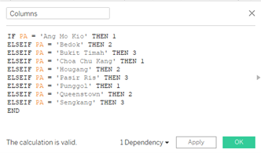 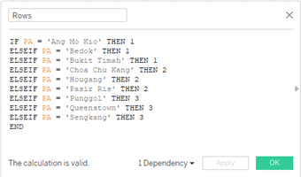
- Drag the newly created Columns and Rows calculated fields to the first field of the respective Columns / Rows shelf. This will index the charts as defined in the calculated fields.
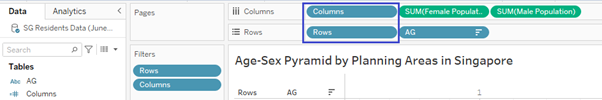
- Filter out uninterested Planning Area entries by adding the Rows and Columns fields to the Filters shelf. Exclude all null values to filter of Planning Areas which have not previously been defined in the Rows / Columns calculated fields.
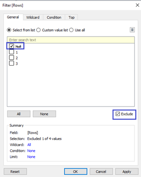 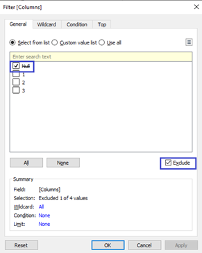
- Right click on the Columns values and uncheck Show Header to remove the Column header values. Do the same for the Row header values as well.
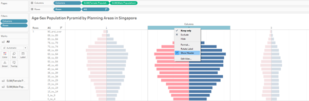
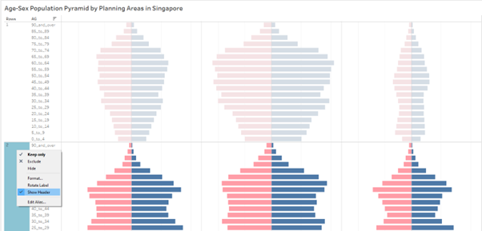
- Right click on the AG row header and select Hide Field Labels for Rows to remove the AG field header display.
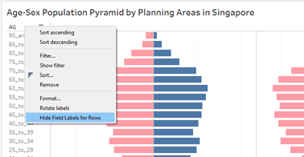
- Drag the PA field into the Label for Male Marks card. Click on Label, under Marks to Label, ensure that the parameters as displayed in the screenshot have been set. Manually drag the labels to the top right hand corner of each of the 9 bar charts.
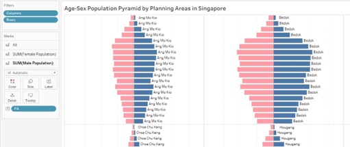
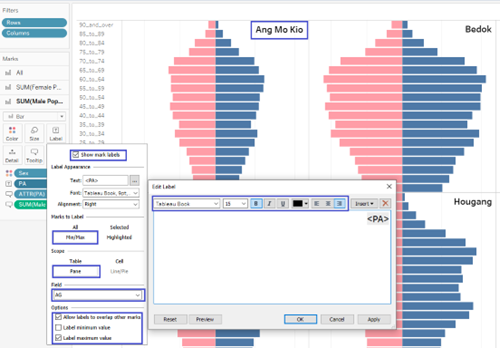
- Drag the Sex field into the Color for All Marks card. Click on Colors button and select Edit Colors to select the desired colours. Rename and reformat the Sex field to Gender.
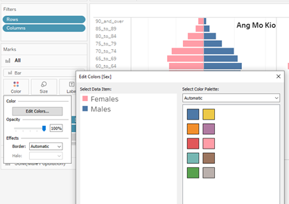 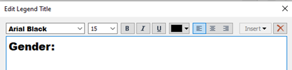
- Create a FIXED level of detail (LOD) calculated field called Sum Pop to fix the calculation of sum(Pop) by PA. This will enable the field to fix the total population sum by planning areas for the purpose of the tooltip display.
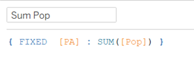
- To set the tooltip display, under the All population marks card, drag Sum Pop into Tooltip and set the formatting parameters as displayed in the screenshot below. Under the Female Population Marks card, drag PA and Female into Tooltip and set the formatting parameters as displayed in the screenshot below. Do the same for Male Population as well.
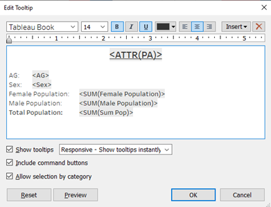
Creating the Dashboard
- Click on the new dashboard tab. Under size, select Automatic.
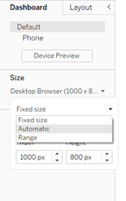
- Drag the created worksheet to the dashboard space. Using the Text object, ensure that the Tiled format is selected before dragging the object to the top-most layer of the dashboard. Input the dashboard title header and format the text size, font and colour accordingly. 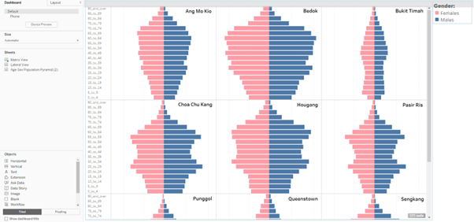
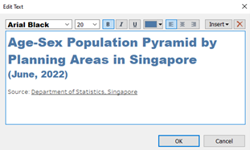
- Drag and drop the image object to the top-right corner of the dashboard. The image should be saved on your desktop before specifying the path to upload the image to. Check Fit image.
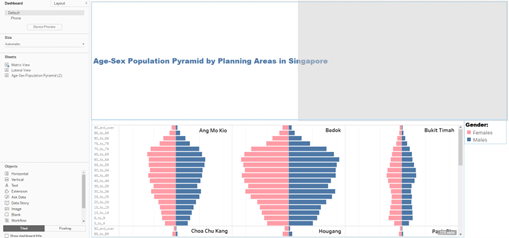 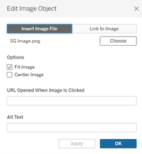
- Select the Gender container and drop to the top-right corner of the dashboard.
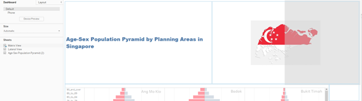
- Resize the respective Containers where relevant to produce the final output.
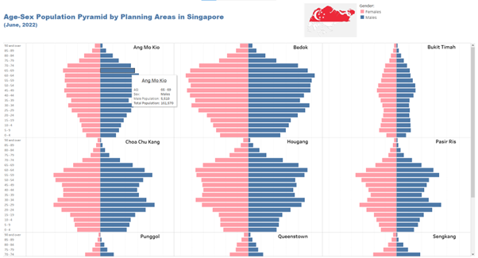